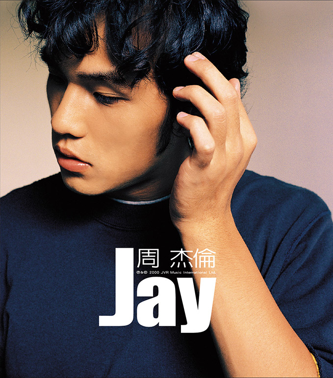

La història darrere del so
De les tecles
a tot un univers.
Cantant, compositor, productor, actor i director. La trajectòria de Jay Chou és una conversa constant entre disciplines.
 周杰倫
周杰倫
Jay Chou · nascut el 18 de gener de 1979
El piano com
a punt de partida.
Nascut a Taiwan, Jay Chou va debutar discogràficament l’any 2000. Des d’aleshores, ha desenvolupat una obra on conviuen el pop en mandarí, l’R&B i referències a la tradició musical xinesa.
La seva faceta de compositor i productor va de la mà d’una mirada visual: videoclips, personatges i escenaris que amplien les històries de cada disc.
Consulta la biografia oficialUn recorregut en sis moments
La seva pròpia partitura.
-
2000
El primer capítol
El seu debut homònim, Jay, presenta una manera personal de connectar el pop, el piano i l’R&B.

-
2001
Fantasy: trobar una veu pròpia
Fantasy consolida un imaginari musical que combina experimentació rítmica i sensibilitat melòdica.
-
2004
La poesia de 七里香
Common Jasmine Orange aprofundeix en el seu univers de melodies, records i textures de tradició xinesa.

-
2016
Cançons que expliquen històries
Jay Chou’s Bedtime Stories converteix la discografia en un llibre de contes sonors i visuals.
-
2022
La música es troba amb l’art
Greatest Works of Art construeix ponts entre les cançons, les arts visuals i la imaginació.

-
2026
Una nova manera de mirar la llum
Children of the Sun obre una etapa amb tretze pistes i un nou univers creatiu.
Tres mirades
La música també es veu.